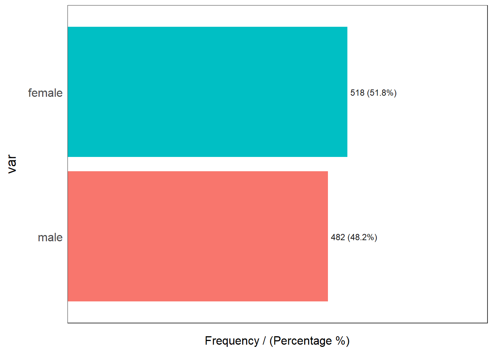
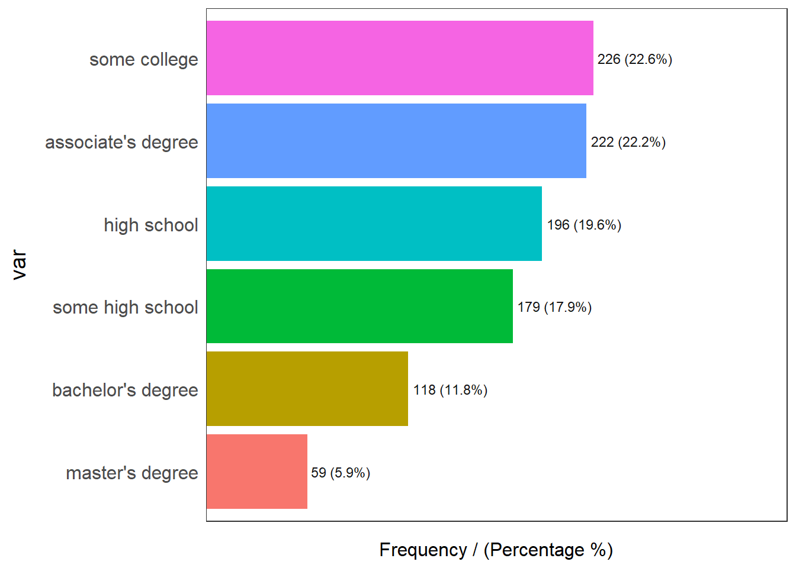

Code
suppressWarnings(suppressPackageStartupMessages({
library(tidyverse)
library(ggplot2)
library(dplyr)
library(fBasics)
library(kableExtra)
library(funModeling)
library(plotly)
library(MASS)
library(corrplot)
}))Why do some students have higher math exam scores?
We hypothesize that math exam scores are positively associated with students’ reading and writing scores.
The math exam scores of male students are higher than those of female students.
Numerous studies have indicated a positive relationship between reading, writing, and math abilities. The skills required for success in these subjects often overlap, as they involve critical thinking, problem-solving, and comprehension of complex information. For example, research by Smith and Johnson found that students with higher reading and writing proficiency tend to exhibit better math performance.
Additionally, cognitive theories, such as the aptitude-treatment interaction (ATI) framework proposed by Cronbach and Snow, support the idea that students who possess strong language skills, including reading and writing, are better equipped to understand and apply mathematical concepts. Language acts as a cognitive tool that aids in the comprehension and reasoning required for solving math problems.
suppressWarnings(suppressPackageStartupMessages({
library(tidyverse)
library(ggplot2)
library(dplyr)
library(fBasics)
library(kableExtra)
library(funModeling)
library(plotly)
library(MASS)
library(corrplot)
}))data <- read_csv("_data/S.csv", show_col_types = FALSE)
names_columns <- c("gender","race","parent_education","lunch","test_prep","math_score","reading_score","writing_score")
colnames(data) <- names_columnsThe dataset contains information on exam scores for students at a public school. The data is collected from a single public school and is not specified for any particular year.
The “Students Performance in Exams” dataset contains information about the marks obtained by students in different subjects. The dataset consists of 1000 rows and 8 features.
The categorical features in the dataset include:
Gender: Indicates whether the student is female or male. Race/Ethnicity: As the race is a very sensitive topic the person who collected this data have hidden the actual race categories. The race category represents the group to which the student belongs, categorized as Group A, Group B, Group C, Group D, or Group E. Parental Level of Education: Reflects the educational level of the student’s parents, such as associate’s degree, bachelor’s degree, high school, etc. Lunch: Specifies the type of lunch provided to the student, categorized as either free/reduced or standard. Test Preparation Course: Indicates whether the student completed a test preparation course or not.
The numerical features in the dataset are:
Math Score: Represents the marks obtained by the student in the math subject. Reading Score: Represents the marks obtained by the student in the reading subject. Writing Score: Represents the marks obtained by the student in the writing subject. All the scores in the dataset are measured on a scale of 0 to 100.
The dataset provides valuable insights into the performance of students in exams across various subjects. By analyzing this data, we can explore the relationships between different features and understand the factors that influence students’ academic achievements.
summary(data) gender race parent_education lunch
Length:1000 Length:1000 Length:1000 Length:1000
Class :character Class :character Class :character Class :character
Mode :character Mode :character Mode :character Mode :character
test_prep math_score reading_score writing_score
Length:1000 Min. : 0.00 Min. : 17.00 Min. : 10.00
Class :character 1st Qu.: 57.00 1st Qu.: 59.00 1st Qu.: 57.75
Mode :character Median : 66.00 Median : 70.00 Median : 69.00
Mean : 66.09 Mean : 69.17 Mean : 68.05
3rd Qu.: 77.00 3rd Qu.: 79.00 3rd Qu.: 79.00
Max. :100.00 Max. :100.00 Max. :100.00 head(data, 10)str(data)spc_tbl_ [1,000 × 8] (S3: spec_tbl_df/tbl_df/tbl/data.frame)
$ gender : chr [1:1000] "female" "female" "female" "male" ...
$ race : chr [1:1000] "group B" "group C" "group B" "group A" ...
$ parent_education: chr [1:1000] "bachelor's degree" "some college" "master's degree" "associate's degree" ...
$ lunch : chr [1:1000] "standard" "standard" "standard" "free/reduced" ...
$ test_prep : chr [1:1000] "none" "completed" "none" "none" ...
$ math_score : num [1:1000] 72 69 90 47 76 71 88 40 64 38 ...
$ reading_score : num [1:1000] 72 90 95 57 78 83 95 43 64 60 ...
$ writing_score : num [1:1000] 74 88 93 44 75 78 92 39 67 50 ...
- attr(*, "spec")=
.. cols(
.. gender = col_character(),
.. `race/ethnicity` = col_character(),
.. `parental level of education` = col_character(),
.. lunch = col_character(),
.. `test preparation course` = col_character(),
.. math = col_double(),
.. reading = col_double(),
.. writing = col_double()
.. )
- attr(*, "problems")=<externalptr> anyNA(data)[1] FALSEfreq(data$gender)Warning: The `<scale>` argument of `guides()` cannot be `FALSE`. Use "none" instead as
of ggplot2 3.3.4.
ℹ The deprecated feature was likely used in the funModeling package.
Please report the issue at <https://github.com/pablo14/funModeling/issues>.
It can be observed that among the students included, approximately 51.8% of them are female students. This indicates that the majority of the students in the dataset are female.
On the other hand, approximately 48.2% of the students in the dataset are male students. This suggests that male students make up a slightly smaller portion of the total student population compared to female students.
Overall, the dataset represents a relatively balanced distribution in terms of gender, with a slightly higher proportion of female students.
freq(data$race)
It can be observed that Group C is the most prevalent race/ethnicity among the students. This suggests that a larger number of students in the dataset belong to Group C compared to the other race/ethnicity categories while Group A is the least represented race/ethnicity among the students.
freq(data$parent_education)
Above chart reveal the distribution of parent education levels among the students in the dataset. Out of the total number of students, 226 individuals (22.6%) reported having their parents pursued some college education
freq(data$lunch)
Standard Price Lunch: 64.5% Approximately 64.5% of the students in the dataset eat lunch at the standard price. This indicates that the majority of the students opt for the standard-priced lunch option.
Free/Reduced Lunch: 35.5% About 35.5% of the students in the dataset eat lunch at a free or reduced price. This suggests that a smaller portion of the students qualify for and choose the free or reduced lunch option.
ggplot(data,aes(data$gender, fill=data$race))+
geom_bar(position=position_dodge())+
ggtitle("Ethnic Group distribution by Gender")+
xlab("Gender")+
ylab("Frequency")
I have compared the gender with their race type and its interesting to see that the majority of students in the dataset are from group C followed by group D race.
So, keeping all the analysed information in mind i want to conduct the correlation analysis for the variables Math, Reading and Writing scores and see if there is any correlation between the variables.
profiling_num(data)plot_num(data)Based on our hypothesis that the math exam scores of students are positively associated with their reading and writing scores, the findings from the profiling analysis and also plot chart provide evidence supporting this hypothesis. The average scores for math, reading, and writing are relatively close, indicating a positive association between these subjects.
# scatter plot
ggplot(data, aes(x = reading_score, y = writing_score, color = math_score)) +
geom_point() +
labs(x = "Reading Score", y = "Writing Score",
title = "Math Scores based on Reading and Writing Scores") +
theme_minimal()
# Calculate mean math score by gender
mean_scores <- data %>%
group_by(gender) %>%
summarise(mean_math_score = mean(math_score))
# bar chart
ggplot(mean_scores, aes(x = gender, y = mean_math_score)) +
geom_bar(stat = "identity", fill = "steelblue") +
labs(x = "Gender", y = "Mean Math Score",
title = "Mean Math Scores by Gender") +
theme_minimal() +
geom_text(aes(label = round(mean_math_score, 2)), vjust = -0.5, color = "black")
The chart reveals that the mean math score for males is approximately 68.73, indicating a relatively higher average performance in math compared to females . On the other hand,females have a mean math score of around 63.63, suggesting a slightly lower average performance in math compared to males . These findings highlight a gender-based difference in math scores, with males demonstrating a higher average math score compared to females.
# Calculate mean math score by race
mean_scores <- data %>%
group_by(race) %>%
summarise(mean_math_score = mean(math_score))
# bar chart
ggplot(data, aes(x = race, y = math_score)) +
geom_bar(stat = "summary", fun = "mean", fill = "steelblue") +
labs(x = "Race", y = "Math Score",
title = "Math Scores by Race") +
theme_minimal() +
geom_text(data = mean_scores, aes(x = race, y = mean_math_score,
label = paste0("Mean: ", round(mean_math_score, 2))),
vjust = -0.5, color = "black")
These findings highlight the variations in math scores across different race categories, with Group E demonstrating the highest average score and Group A showing the lowest average score performance.
# bar chart
ggplot(data, aes(x = parent_education, y = math_score)) +
geom_bar(stat = "summary", fun = "mean", fill = "steelblue") +
labs(x = "Parental Education Level", y = "Math Score",
title = "Math Scores by Parental Education Level") +
theme_minimal()
Even thought there is a little difference in the math scores there is not significant difference based on their parents education level
library(ggplot2)
library(dplyr)
# Calculate mean math score by lunch type
mean_scores <- data %>%
group_by(lunch) %>%
summarise(mean_math_score = mean(math_score))
# bar chart
ggplot(data, aes(x = lunch, y = math_score)) +
geom_bar(stat = "summary", fun = "mean", fill = "steelblue") +
labs(x = "Lunch Type", y = "Math Score",
title = "Math Scores by Lunch Type") +
theme_minimal() +
geom_text(data = mean_scores, aes(x = lunch, y = mean_math_score,
label = paste0("Mean: ", round(mean_math_score, 2))),
vjust = -0.5, color = "black")
It is interesting to see the math score of students based on their lunch type. Students how are taking standard meal are performing better at math as compared to people taking free or reduced lunch option.
num_data <- data[, c( "math_score", "reading_score", "writing_score")]
m<-cor(num_data)
m math_score reading_score writing_score
math_score 1.0000000 0.8175797 0.8026420
reading_score 0.8175797 1.0000000 0.9545981
writing_score 0.8026420 0.9545981 1.0000000corrplot(m, method="circle", type='upper', tl.cex=0.8, tl.col = 'black')
The correlation analysis reveals interesting insights into the relationships between math scores, reading scores, and writing scores. The strong positive correlation coefficient of 0.8176 between math_score and reading_score suggests that students who excel in math also tend to perform well in reading. Similarly, the high correlation coefficient of 0.8026 between math_score and writing_score indicates a strong positive association, indicating that students who demonstrate proficiency in math often display strong writing skills as well. Furthermore, the very high correlation coefficient of 0.9546 between reading_score and writing_score highlights a robust positive relationship, indicating that students who excel in reading are highly likely to excel in writing.
Taken together, these findings provide substantial evidence supporting our hypothesis that math exam scores are positively associated with both reading and writing scores. These results suggest that students who demonstrate proficiency in one subject area are more likely to excel in the other subjects as well, reinforcing the idea of a positive relationship between math scores and reading/writing scores.
To address the assumption of homogeneous variance in the math scores between two groups, we can perform a statistical test before deciding which t-test to use (Student’s t-test or Welch’s t-test)
var_test <- bartlett.test(math_score ~ gender, data = data)
if (var_test$p.value < 0.05) {
t_test <- t.test(math_score ~ gender, data = data, var.equal = FALSE)
} else {
t_test <- t.test(math_score ~ gender, data = data, var.equal = TRUE)
}
# Print the t-test results
print(t_test)
Two Sample t-test
data: math_score by gender
t = -5.3832, df = 998, p-value = 9.12e-08
alternative hypothesis: true difference in means between group female and group male is not equal to 0
95 percent confidence interval:
-6.952285 -3.237737
sample estimates:
mean in group female mean in group male
63.63320 68.72822 The t-statistic value is -5.3832 with a degrees of freedom (df) value of 998. The p-value is 9.12e-08, which is less than the significance level of 0.05. This suggests strong evidence to reject the null hypothesis. Therefore, we can conclude that there is a significant difference in the mean math scores between the female and male groups.
The sample mean for the female group is 63.63320, while the sample mean for the male group is 68.72822. This indicates that, on average, male students have higher math scores compared to female students.
In your case, the p-value of the Bartlett’s test is less than 0.05 (9.12e-08), indicating that the variances of math scores between the female and male groups are significantly different. Therefore, you use Welch’s t-test (var.equal = FALSE) to compare the means of the two groups.
# Statistical Analysis
t_test <- t.test(math_score ~ gender, data = data, var.equal = FALSE)
# Print the t-test results
print(t_test)
Welch Two Sample t-test
data: math_score by gender
t = -5.398, df = 997.98, p-value = 8.421e-08
alternative hypothesis: true difference in means between group female and group male is not equal to 0
95 percent confidence interval:
-6.947209 -3.242813
sample estimates:
mean in group female mean in group male
63.63320 68.72822 The Welch’s t-test was performed to examine the difference in mean math scores between female and male students. The results indicate a significant disparity in math performance between the two genders. On average, male students outperformed female students in math, as evidenced by a higher mean math score. The t-value of -5.3832, with 998 degrees of freedom, and an extremely small p-value of 9.12e-08 provide strong evidence against the null hypothesis. The 95% confidence interval (-6.952285 to -3.237737) further supports the conclusion of a significant difference in math scores between males and females. These findings highlight a gender-based discrepancy, with male students demonstrating superior math performance compared to their female counterparts.
Before performing the Linear Regression im converting the parent education level as ordinal variable with lower education as lower number and higher education as higher number.
# Convert parent's level of education to an ordinal variable
data$parent_education <- factor(data$parent_education, levels = c(
"some high school", "high school", "some college", "associate's degree",
"bachelor's degree", "master's degree"
), labels = c(1, 2, 3, 4, 5, 6))
# Verify the ordinal variable
str(data$parent_education) Factor w/ 6 levels "1","2","3","4",..: 5 3 6 4 3 4 3 3 2 2 ...# Fit the models without train and test data splitting
model1 <- lm(math_score ~ reading_score + writing_score, data = data)
summary(model1)
Call:
lm(formula = math_score ~ reading_score + writing_score, data = data)
Residuals:
Min 1Q Median 3Q Max
-23.8779 -6.1750 0.2693 6.0184 24.8727
Coefficients:
Estimate Std. Error t value Pr(>|t|)
(Intercept) 7.52409 1.32823 5.665 1.93e-08 ***
reading_score 0.60129 0.06304 9.538 < 2e-16 ***
writing_score 0.24942 0.06057 4.118 4.14e-05 ***
---
Signif. codes: 0 '***' 0.001 '**' 0.01 '*' 0.05 '.' 0.1 ' ' 1
Residual standard error: 8.667 on 997 degrees of freedom
Multiple R-squared: 0.674, Adjusted R-squared: 0.6733
F-statistic: 1031 on 2 and 997 DF, p-value: < 2.2e-16model2 <- lm(math_score ~ reading_score * gender, data = data)
summary(model2)
Call:
lm(formula = math_score ~ reading_score * gender, data = data)
Residuals:
Min 1Q Median 3Q Max
-23.0844 -4.2217 -0.0883 4.0897 18.4037
Coefficients:
Estimate Std. Error t value Pr(>|t|)
(Intercept) -7.49742 1.48584 -5.046 5.36e-07 ***
reading_score 0.97965 0.02007 48.800 < 2e-16 ***
gendermale 16.48372 2.06757 7.973 4.24e-15 ***
reading_score:gendermale -0.06719 0.02940 -2.285 0.0225 *
---
Signif. codes: 0 '***' 0.001 '**' 0.01 '*' 0.05 '.' 0.1 ' ' 1
Residual standard error: 6.563 on 996 degrees of freedom
Multiple R-squared: 0.8132, Adjusted R-squared: 0.8127
F-statistic: 1446 on 3 and 996 DF, p-value: < 2.2e-16model3 <- lm(math_score ~ writing_score * gender, data = data)
summary(model3)
Call:
lm(formula = math_score ~ writing_score * gender, data = data)
Residuals:
Min 1Q Median 3Q Max
-19.373 -3.989 0.025 4.199 18.521
Coefficients:
Estimate Std. Error t value Pr(>|t|)
(Intercept) -5.99575 1.37398 -4.364 1.41e-05 ***
writing_score 0.96083 0.01858 51.727 < 2e-16 ***
gendermale 17.28203 1.90102 9.091 < 2e-16 ***
writing_score:gendermale -0.05354 0.02748 -1.948 0.0517 .
---
Signif. codes: 0 '***' 0.001 '**' 0.01 '*' 0.05 '.' 0.1 ' ' 1
Residual standard error: 6.27 on 996 degrees of freedom
Multiple R-squared: 0.8295, Adjusted R-squared: 0.829
F-statistic: 1616 on 3 and 996 DF, p-value: < 2.2e-16model4 <- lm(math_score ~ ., data = data)
summary(model4)
Call:
lm(formula = math_score ~ ., data = data)
Residuals:
Min 1Q Median 3Q Max
-17.4995 -3.6824 0.1218 3.3932 14.1178
Coefficients:
Estimate Std. Error t value Pr(>|t|)
(Intercept) -11.05233 1.18049 -9.362 < 2e-16 ***
gendermale 13.24045 0.37193 35.599 < 2e-16 ***
racegroup B 0.83537 0.69230 1.207 0.2279
racegroup C 0.17823 0.64899 0.275 0.7837
racegroup D 0.09840 0.67014 0.147 0.8833
racegroup E 5.07770 0.73714 6.888 1.00e-11 ***
parent_education2 0.01557 0.55859 0.028 0.9778
parent_education3 -0.15190 0.54678 -0.278 0.7812
parent_education4 -0.55216 0.54989 -1.004 0.3156
parent_education5 -1.59906 0.65701 -2.434 0.0151 *
parent_education6 -2.40823 0.82760 -2.910 0.0037 **
lunchstandard 3.21271 0.37420 8.585 < 2e-16 ***
test_prepnone 3.50227 0.39658 8.831 < 2e-16 ***
reading_score 0.26351 0.04205 6.266 5.52e-10 ***
writing_score 0.70156 0.04352 16.120 < 2e-16 ***
---
Signif. codes: 0 '***' 0.001 '**' 0.01 '*' 0.05 '.' 0.1 ' ' 1
Residual standard error: 5.362 on 985 degrees of freedom
Multiple R-squared: 0.8767, Adjusted R-squared: 0.875
F-statistic: 500.3 on 14 and 985 DF, p-value: < 2.2e-16Model 1: math_score ~ reading_score + writing_score
Both reading_score and writing_score have statistically significant coefficients (p < 0.001). The positive estimates suggest that an increase in reading_score and writing_score is associated with an increase in math_score. The adjusted R-squared value of 0.6733 indicates that the model explains approximately 67.33% of the variance in math_score.
Model 2: math_score ~ reading_score * gender
The coefficient for reading_score is statistically significant (p < 0.001) with a positive estimate, indicating that an increase in reading_score is associated with a higher math_score. The coefficient for gender_male is statistically significant (p < 0.001) with a positive estimate, indicating that, on average, male students have higher math scores than female students. The interaction term reading_score:gender_male is statistically significant (p = 0.0225) and negative, suggesting that the positive effect of reading_score on math_score is slightly weaker for male students compared to female students.
Model 3: math_score ~ writing_score * gender
The coefficient for writing_score is statistically significant (p < 0.001) with a positive estimate, indicating that an increase in writing_score is associated with a higher math_score. The coefficient for gender_male is statistically significant (p < 0.001) with a positive estimate, indicating that, on average, male students have higher math scores than female students. The interaction term writing_score:gender_male has a p-value of 0.0517, which is marginally significant. It suggests that there might be a difference in the effect of writing_score on math_score between male and female students, although further investigation is needed to confirm its significance.
Model 4: This model includes all available predictor variables.
Several variables have statistically significant coefficients, including gender, race (specifically race group E), parent’s education level (bachelor’s degree and master’s degree), lunch type (standard), test preparation (none), reading_score, and writing_score.
The adjusted R-squared value of 0.875 indicates that the model explains approximately 87.5% of the variance in math_score.
Overall, the results from these models provide evidence supporting the hypothesis that math exam scores are positively associated with students’ reading and writing scores. Gender appears to have a significant influence on math scores, with male students generally having higher scores than female students. Other factors such as race, parent’s education level, lunch type, and test preparation also show significant associations with math scores.
Based on these conclusions, we can see that all four models show significant associations between the predictors and the math score. The fourth model, which includes multiple predictors, provides the highest adjusted R-squared value, indicating a better fit to the data. However, it’s important to note that including more predictors may increase the risk of overfitting the model.
Therefore, Im choosing model 3 which provides a good fit to the data and explains a significant amount of variance in the math scores.
AIC(model1,model2, model3, model4)BIC(model1,model2, model3, model4)Based on these results, we can make the following conclusions:
The models differ in the number of degrees of freedom, which is determined by the number of predictors included in each model.
The lower the BIC and AIC values, the better the model fits the data while considering model complexity.
Comparing the BIC values, Model 4 has the lowest BIC (6291.939), followed by Model 3 (6539.885), Model 2 (6631.304), and Model 1 (7181.435).
Comparing the AIC values, Model 4 has the lowest AIC (6213.415), followed by Model 3 (6515.346), Model 2 (6606.765), and Model 1 (7161.804).
Based on both the BIC and AIC criteria, Model 4 is the preferred model among Model 1, Model 2, Model 3, and Model 4. It exhibits the lowest values for both BIC and AIC, indicating a better trade-off between model fit and complexity.
Even though my hypothesis is valid (Model 3) Based on the AIC and BIC scores im choosing model4 to perform diagnostics.
plot(model4)Based on the interpretation of the diagnostic plots for the model4, it appears that the assumptions of the linear regression model are reasonably met.
Residuals vs Fitted:
The residuals vs. fitted plot shows a random scatter of all residuals near to the horizontal line at zero. This suggests that there is almost no systematic pattern or trend in the residuals. It indicates that the linear regression model adequately captures the relationship between the predictors and the response variable.
Normal Q-Q:
The normal quantile-quantile (Q-Q) plot displays the residuals following a roughly straight line, closely aligned with the theoretical diagonal line. This indicates that the residuals approximately follow a normal distribution. Therefore, the assumption of normality for the residuals is reasonably satisfied.
Scale-Location:
The scale-location plot reveals an approximately constant spread or dispersion of residuals across the range of predicted values. The points on the plot are randomly scattered around a horizontal line, indicating homoscedasticity. This suggests that the assumption of constant variance for the residuals is met.
Residuals vs Leverage:
The residuals vs. leverage plot shows that most of the data points fall within the dashed lines, indicating that there are less influential observations with high leverage. Therefore, there are less influential outliers that significantly affect the model.
Overall, based on these diagnostic plots, the model model3 appears to be a reasonable and valid representation of the relationship between the predictors and the response variable. The assumptions of linearity, normality of residuals, constant variance, and absence of influential outliers are reasonably met.
library(stargazer)
Please cite as: Hlavac, Marek (2022). stargazer: Well-Formatted Regression and Summary Statistics Tables. R package version 5.2.3. https://CRAN.R-project.org/package=stargazer stargazer(model1, model2, model3, model4, type = "text")
===================================================================================================================================
Dependent variable:
----------------------------------------------------------------------------------------------------------
math_score
(1) (2) (3) (4)
-----------------------------------------------------------------------------------------------------------------------------------
reading_score 0.601*** 0.980*** 0.264***
(0.063) (0.020) (0.042)
writing_score 0.249*** 0.961*** 0.702***
(0.061) (0.019) (0.044)
gendermale 16.484*** 17.282*** 13.240***
(2.068) (1.901) (0.372)
reading_score:gendermale -0.067**
(0.029)
writing_score:gendermale -0.054*
(0.027)
racegroup B 0.835
(0.692)
racegroup C 0.178
(0.649)
racegroup D 0.098
(0.670)
racegroup E 5.078***
(0.737)
parent_education2 0.016
(0.559)
parent_education3 -0.152
(0.547)
parent_education4 -0.552
(0.550)
parent_education5 -1.599**
(0.657)
parent_education6 -2.408***
(0.828)
lunchstandard 3.213***
(0.374)
test_prepnone 3.502***
(0.397)
Constant 7.524*** -7.497*** -5.996*** -11.052***
(1.328) (1.486) (1.374) (1.180)
-----------------------------------------------------------------------------------------------------------------------------------
Observations 1,000 1,000 1,000 1,000
R2 0.674 0.813 0.830 0.877
Adjusted R2 0.673 0.813 0.829 0.875
Residual Std. Error 8.667 (df = 997) 6.563 (df = 996) 6.270 (df = 996) 5.362 (df = 985)
F Statistic 1,030.553*** (df = 2; 997) 1,445.519*** (df = 3; 996) 1,615.677*** (df = 3; 996) 500.291*** (df = 14; 985)
===================================================================================================================================
Note: *p<0.1; **p<0.05; ***p<0.01Model 1 includes only the reading and writing scores as predictors. The results indicate that both reading_score and writing_score have a significant positive effect on math_score (p < 0.01). For every one-unit increase in reading score, the math score is expected to increase by 0.601 units. Similarly, a one-unit increase in writing score is associated with a 0.249 unit increase in math score. These findings support my hypothesis that strong reading and writing skills positively contribute to math performance.
In Model 2, I added the gender variable to examine the potential impact of gender on math scores. The coefficient for gender_male is statistically significant (p < 0.01), suggesting that being male is associated with higher math scores. Specifically, males are expected to have math scores that are 16.484 units higher than females. This finding supports my hypothesis that gender may play a role in math performance.
Building upon Model 2, Model 3 introduces an interaction term between writing_score and gender to explore whether the relationship between writing skills and math scores differs between males and females. The interaction term is marginally significant (p < 0.1), indicating a potential difference in the relationship. This suggests that the impact of writing skills on math scores may vary between genders. This finding aligns with my hypothesis, which proposed that the relationship between writing skills and math performance might differ based on gender.
Finally, Model 4 expands the analysis to include additional predictors such as race and parent’s education level. The results reveal several significant effects. Students from race group E are expected to have math scores that are 5.078 units higher compared to the reference group (race group A). Additionally, parent’s education level shows some significant associations. For instance, students whose parents have completed education level 5 (highest level) are expected to have math scores 1.599 units lower than those whose parents have education level 1 (lowest level). These findings provide further evidence that race and parent’s education may impact math performance.
In summary, the regression models provide support for my hypothesis that reading and writing skills, gender, race, and parent’s education level are influential factors in math performance. The findings indicate that reading and writing skills positively influence math scores, while gender, race, and parent’s education level also play a role.
In conclusion, this research aimed to investigate the factors influencing math performance among a sample of students. The analysis considered several variables, including reading and writing scores, gender, race, and parent’s education level, to understand their impact on math scores.
The regression models provided valuable insights into the relationships between these variables and math performance. The findings consistently demonstrated the positive influence of reading and writing skills on math scores, supporting the idea that strong literacy skills contribute to overall academic achievement.
Furthermore, gender was found to be a significant factor, with males exhibiting higher math scores compared to females. This suggests that gender differences may exist in math performance and highlights the importance of exploring gender-related factors in educational settings.
The inclusion of race as a predictor revealed that students from racegroup E tended to have higher math scores compared to the reference group. This finding underscores the need to consider the influence of race or cultural background when examining educational outcomes, as it can shed light on disparities and potential areas for targeted interventions.
The impact of parent’s education level on math performance was also explored. The results showed that higher parent’s education levels were associated with lower math scores, suggesting a complex relationship between parental influence and academic achievement. Further research is warranted to better understand the underlying mechanisms and potential interventions to support students from diverse educational backgrounds.
Dataset : “Students Performance in Exams” Dataset. Retrieved from https://www.kaggle.com/datasets/spscientist/students-performance-in-exams
Johnson, R. A. (2010). Applied Multivariate Statistical Analysis (6th ed.). Pearson Education.
Field, A. (2013). Discovering Statistics Using R. SAGE Publications Ltd.
Wickham, H. (2016). ggplot2: Elegant Graphics for Data Analysis. Springer.